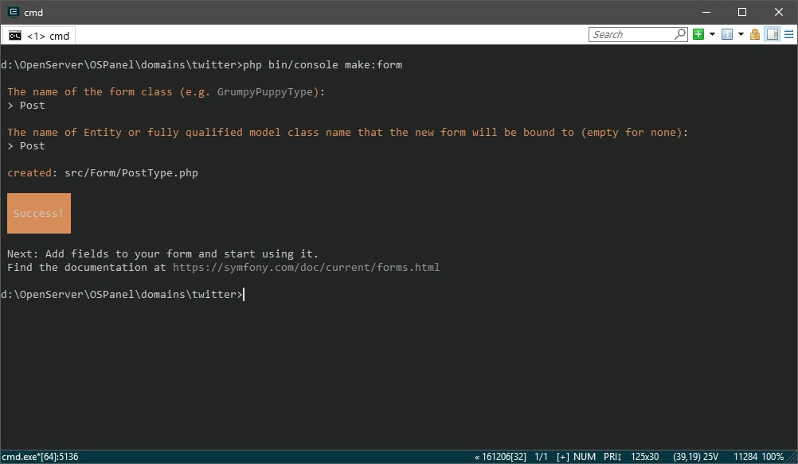
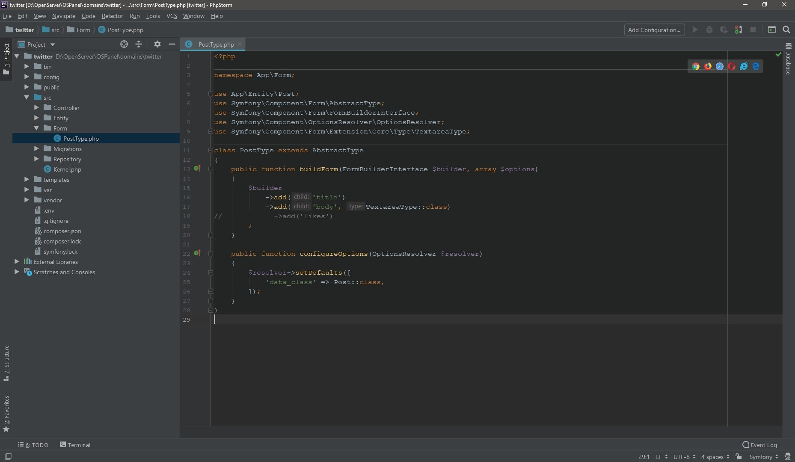

Completion of posts, part 2
Дорабатываем вывод новостей, часть 2
Работа с формами - одна из самых частых задач встречающихся на пути web-разработчика. Необходимо хорошо знать возможности форм, уметь выстраивать их в нужной последовательности и понимать принципы работы. Тема эта сама по себе большая. Данный курс все же руководствуется шаблоном "быстрый старт", поэтому в данной главе мы разберем именно тот вариант работы с формой, который будет удобен в учебном проекте. Но я настоятельно рекомендую вам познакомиться с этим материалом как можно лучше. Тема в документации
Чтобы начать работать с формами нам нужно подключить соответствующий рецепт, для этого напишем
composer require form.
Создавать форму будем на основе нашей единственной сущности - Post.
Для ее генерации все так же будем использовать maker'ом.
В консоли пишем php bin/console make:form и далее имя формы.

{kind=link}
В директории src=>Form теперь находится форма под названием PostType.
Представляет она из себя метод configureOptions
- указывающий на пренадлежность формы к сущности, и метод buildForm
- билдер, в котором будем описывать поля формы, их тип и т.д.
Давайте немного изменим форму под наши нужды. Для начала закоментируем add('likes'), т.к.
лайки будут ставить пользователи. Ну а поле body
будет представлять из себя textarea, что мы и укажем.

{kind=link}
Обратите внимание на Textarea, должен быть указан следующий namespace
use Symfony\Component\Form\Extension\Core\Type\TextareaType.
Теперь перейдем к контроллеру и создадим в нем метод createPost,
и разберем что в нем есть.
use Symfony\Component\HttpFoundation\Request;
use App\Form\PostType;
/**
* @Route("/create_post", name="create_post")
*/
public function createPost(Request $request)
{
$post = new Post();
$form = $this->createForm(PostType::class, $post);
$form->handleRequest($request);
if ($form->isSubmitted() && $form->isValid()) {
$em = $this->getDoctrine()->getManager();
$em->persist($post);
$em->flush();
return $this->redirect('/');
}
return $this->render('post/create.html.twig', [
'form' => $form->createView()
]);
}
Первое, на что стоит обратить внимание это аргумент самого метода - Request.
Напомню, что Symfony представляет из себя HTTP фреймворк, данные он получает из класса Request и отдаёт в виде Response.
Ответ мы принимаем переменной Request $request, а методом
$form->handleRequest($request) ниже по коду
его обрабатываем, получая имя формы, метод и т.д.
Что касается isSubmited и isValid думаю, понятно и без пояснений.
После того как форма прошла валидацию:
-
- с помощью
$manager = $this->getDoctrine()->getManager()мы инициировали менеджер объекта для конкретной сущности, в нашем случае это Post. Он отвечает за сохранение объектов и выборку объектов из базы данных. -
- метод persist() в контексте
$manager->persist($post)выполняет подготовку запроса. -
- метод flush() в
$manager->flush()записывает в базу.
Я надеюсь никто из вас меня не возненавидит, в конце концов мы же учимся... Все дело в том, что подключив
maker, мы получили возможность генерации CRUD с помощью
php bin/console make:crud.
Перед тем как приступить к заключительной части, нам предстоит подключить translator и познакомиться с темами форм.
Назначение "переводчика" думаю понятно всем, но в нашем проекте он задействован не будет, резонный вопрос -
"зачем он тогда вообще тут нужен?". И тут мы подходим к темам форм. Если вы до этого работали с какими-либо
фреймворками, то наверняка знаете, что в стандартный виджет форм уже входят такие штуки как label, input, error, hint.
Вот и Symfony не исключение. Стандартной темой отображения формы является шаблон
form_div_layout.html.twig, который располагается в корне фреймворка.
Если посмотреть на
исходный код,
можно увидеть в нем все вышеуказанные элементы, а так же конструкцию trans ({}).
Собственно поэтому мы и подключаем composer require translation,
иначе неминуемо словим ошибку.
Разумеется можно переопределить стандартный шаблон. Как это сделать, да и вообще познакомиться с формами поближе однозначно стоит. Вот ссылки для чтения ( ссылка 1, ссылка 2 ).
Итак, давайте уже создадим представление. Сейчас предлагаю вывести его как есть, без стилей.
{{ form_start(form) }}
{{ form_widget(form) }}
< button type="submit">Сохранить< /button>
{{ form_end(form) }}
С помощью form_start и
form_end мы обозначаем границы формы, а в центр помещаем
form_widget, который отобразит нам всю форму сразу.
Для того чтобы кастомизировать каждое поле отдельно можно воспользоваться
form_row, например как здесь:
{{ form_start(form) }}
{{ form_row(form.title) }
{{ form_row(form.body, { 'attr': {
'rows' : '10',
'class' : 'form-control',
'placeholder' : 'Description',
'cols' : '10' }}) }}
< button type="submit">Сохранить< /button>
{{ form_end(form) }}
Ну и наконец проверим работоспособнось формы. Перейдем по маршруту
create_post, что-нибудь напишем и проверим.
Для тех, кто хочет чуть приукрасить форму, код можно взять здесь